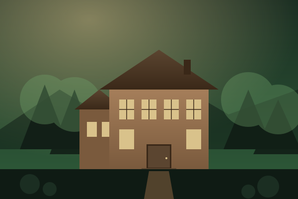
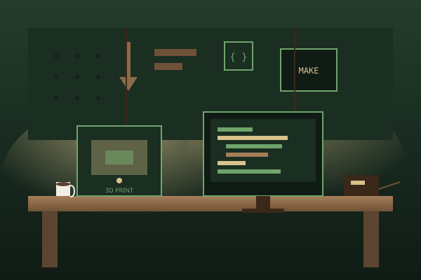
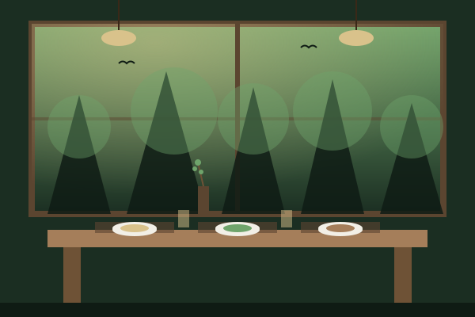
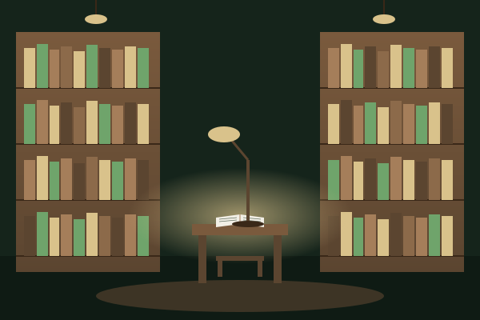

所在地
徳島県名西郡神山町。山々に抱かれた小さな町に、キャンパスがあります。豊かな自然と、IT企業のサテライトオフィスが共存するユニークな土地です。
About
「モノをつくる力で、コトを起こす人」を育てる、私立の高等専門学校。
徳島県名西郡神山町。山々に抱かれた小さな町に、キャンパスがあります。豊かな自然と、IT企業のサテライトオフィスが共存するユニークな土地です。
2023年4月開校。日本では19年ぶりとなる高等専門学校（高専）として誕生しました。※詳細は公式サイト参照
テクノロジーとデザインで、人間の未来を変える学校。起業家精神を持って社会に挑む人を育てます。
地域・産業・教育の専門家が結集して設立。寄付による奨学金制度で、家計状況にかかわらず学びの機会を支えます。
By the Numbers
小さな町の、大きな挑戦。※公式公開情報を参考にした概数
0年
5年一貫教育
0名
1学年の定員
0%
全寮制
0本柱
技術 × デザイン × 起業
Curriculum
3本柱を軸に、5年一貫で「つくる」と「考える」を往復します。
プログラミング、AI、ハードウェア、ネットワークまで。実装できる技術力を身につける。
観察・発想・形にする力。UI/UXからプロダクト、ブランドまで横断的に学ぶ。
事業を起こし、社会に届ける。ビジネス・倫理・コミュニケーションを実践で。
基礎技術と表現の入口。手を動かしながら学ぶ。
専門技術とデザイン思考を本格的に学習。
分野横断のプロジェクトに挑戦。チーム制作。
起業家精神を実践。社会課題への提案。
卒業研究・卒業制作。実装と発信まで。
Campus
森と一体になるキャンパス。学びと暮らしが交わる場所。

木材をふんだんに使った、温もりのあるメインビルディング。

3Dプリンタ・電子工作・撮影機材まで揃う、つくるための空間。

地元食材を活かした食事を、大きな窓から森を眺めながら。

静かに思考を深める書架と、対話のためのラウンジ。
Student Life
全寮制。仲間と暮らし、地域とつながる5年間。
商店街のイベント、農作業、地域企業との共創プロジェクトなど、神山町の人々と共に学ぶ機会が日常にあります。
Voices
森の学校で過ごす日々から、聞こえてくる言葉。※架空のサンプルです
朝起きて窓を開けると、霧と鳥の声に迎えられる。授業の合間に森を歩くと、新しいアイデアが浮かんできます。
失敗しても良い、まず作ってみよう、という空気がある。先生も友達も、自分の挑戦を応援してくれる場所です。
学生たちの「こうしたい」を起点に、技術もデザインも学んでいく。教員自身も毎日学んでいます。
Gallery
写真で巡る、神山のキャンパス。